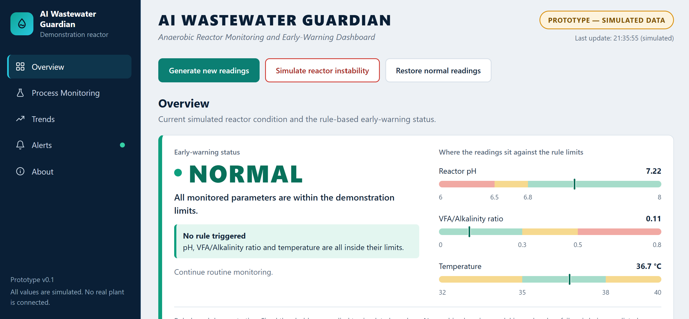

Water & wastewater treatment
Anaerobic and biological treatment, chemical dosing, plant operations and compliance.
Welcome to my portfolio
I am a Water and Wastewater Treatment Professional with over 15 years of industrial experience, currently expanding my expertise into Data Science and Artificial Intelligence. My interest lies in transforming industrial and environmental data into meaningful insights and developing intelligent solutions that improve operational efficiency and environmental sustainability.
For more than 15 years I have worked in industrial water and wastewater treatment, including brewery wastewater operations, laboratory analysis, process monitoring and environmental compliance.
That experience taught me how much valuable information sits inside plant data. So I am building skills in Excel, SQL, Python, statistics and AI tools. This is the next stage of my professional growth: pairing hands-on industrial knowledge with data skills.
My goal is to build technology solutions for environmental and industrial challenges.
Each stage builds on the one before it.
BSc and MSc training in Industrial Chemistry, plus a diploma in Science Laboratory Technology.
15+ years in treatment operations, laboratory analysis and process monitoring.
Now studying BSc Data Science and building skills in Excel, SQL, Python and statistics.
Working towards AI tools and solutions for industrial and environmental challenges.
Industrial knowledge on one side, data and AI skills on the other.
Anaerobic and biological treatment, chemical dosing, plant operations and compliance.
COD, BOD, TSS, pH, VFA and dissolved oxygen analysis, plus SCADA and PLC-based monitoring.
Excel, SQL, Python, NumPy, Pandas, statistics and data visualisation.
Learning to apply AI tools to industrial and environmental problems.

An intelligent monitoring and early-warning system concept. It is designed to analyse operational data and spot possible anaerobic reactor instability before it becomes a serious operational problem.
This is a project in development and my long-term vision. It is not yet a finished AI product.
Videos, technical slides and educational content on wastewater, data and AI. New material is added as it is published.
Explore media